Hantverket i bild.
Platsbyggda möbler, material och detaljer från vårt snickeri. Välj en kategori eller bläddra bland alla arbeten.
Visar alla bilder

Bibliotek i grönt
Platsbyggd bokhylla

Från golv till tak
Platsbyggd garderob

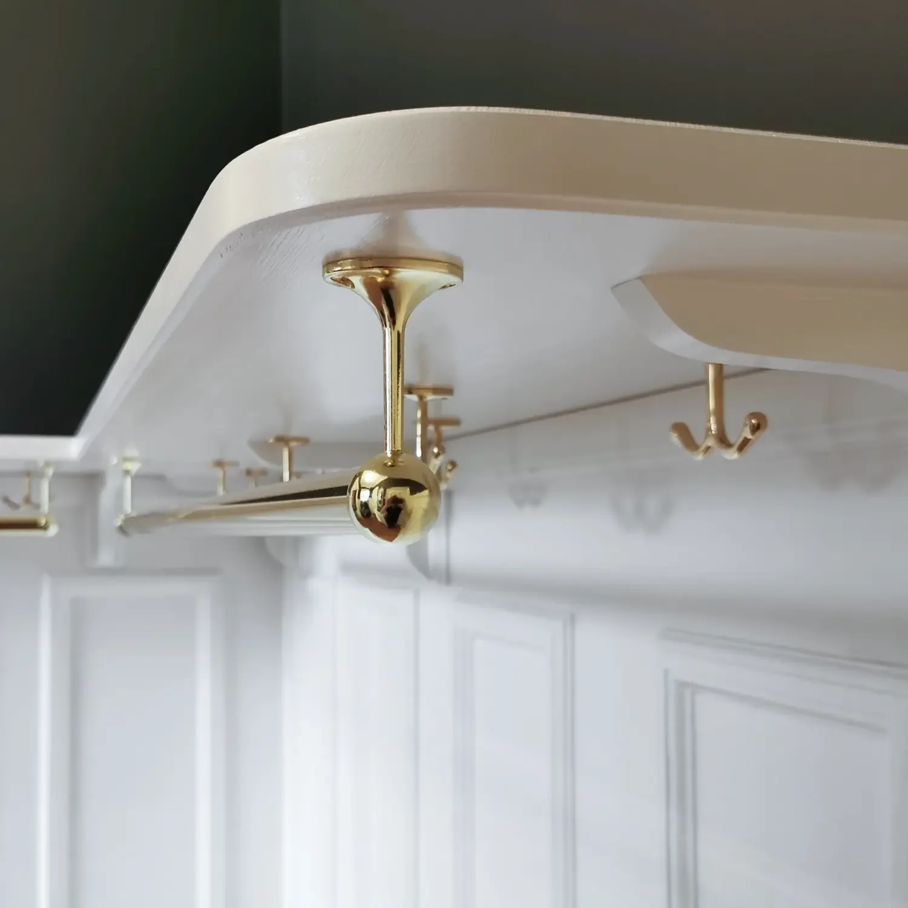
Plats för det dagliga
Detalj från hallinredning

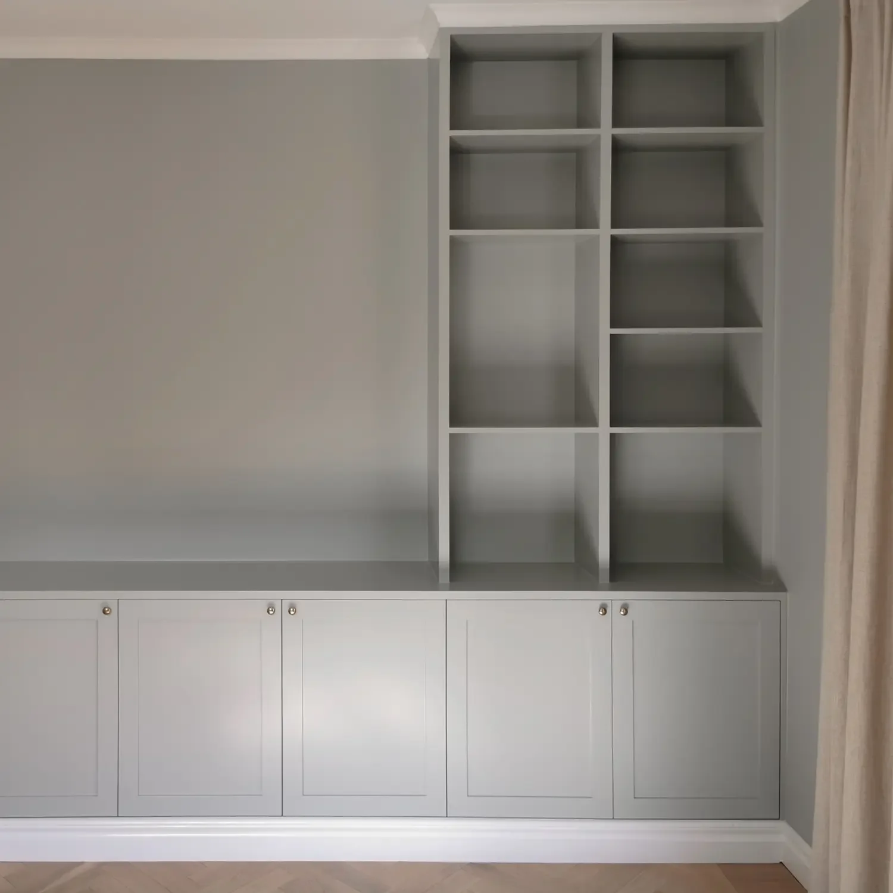
En vägg för böcker
Platsbyggd bokhylla

Detaljer som känns
Garderob med lådor

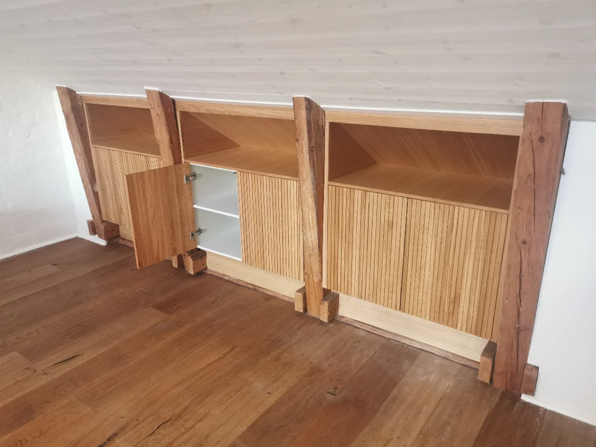
Förvaring i massiv ek
Platsbyggd förvaring

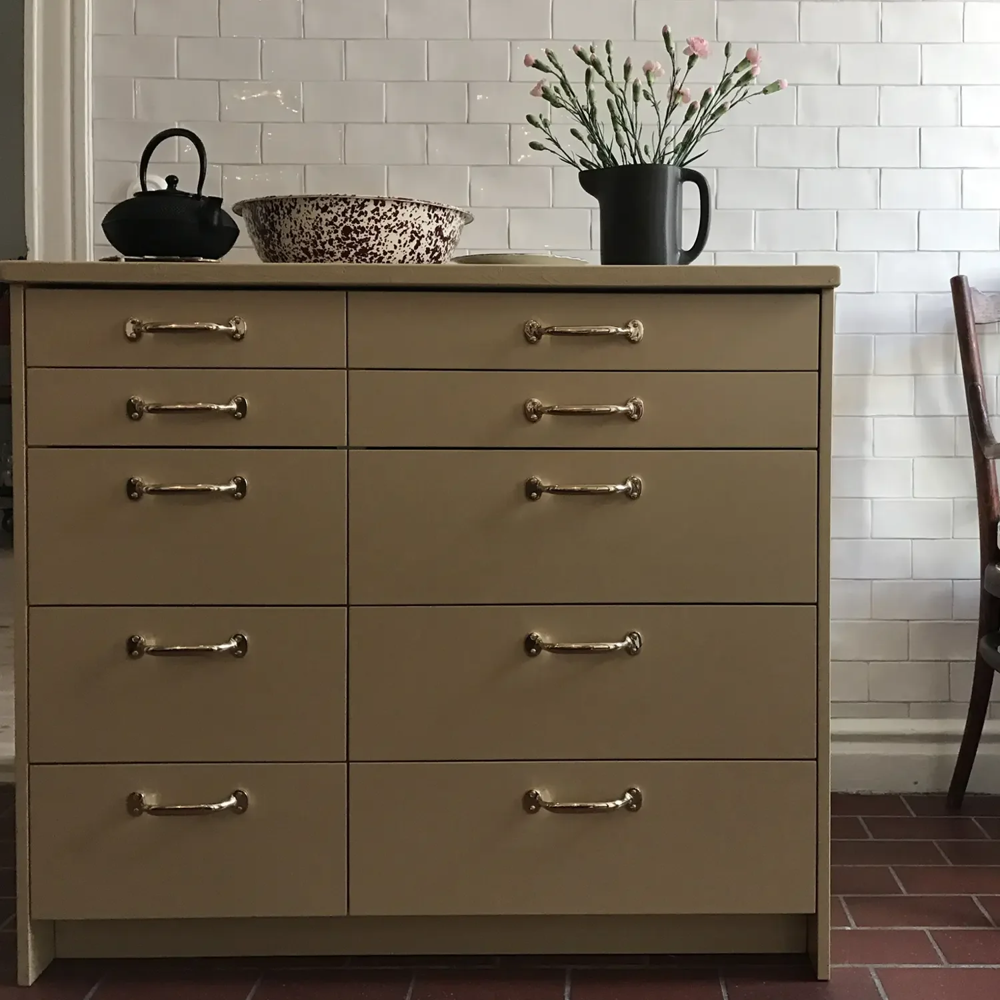
Lådor för vardagen
Platsbyggd byrå i kök

Under snedtaket
Måttanpassad garderob

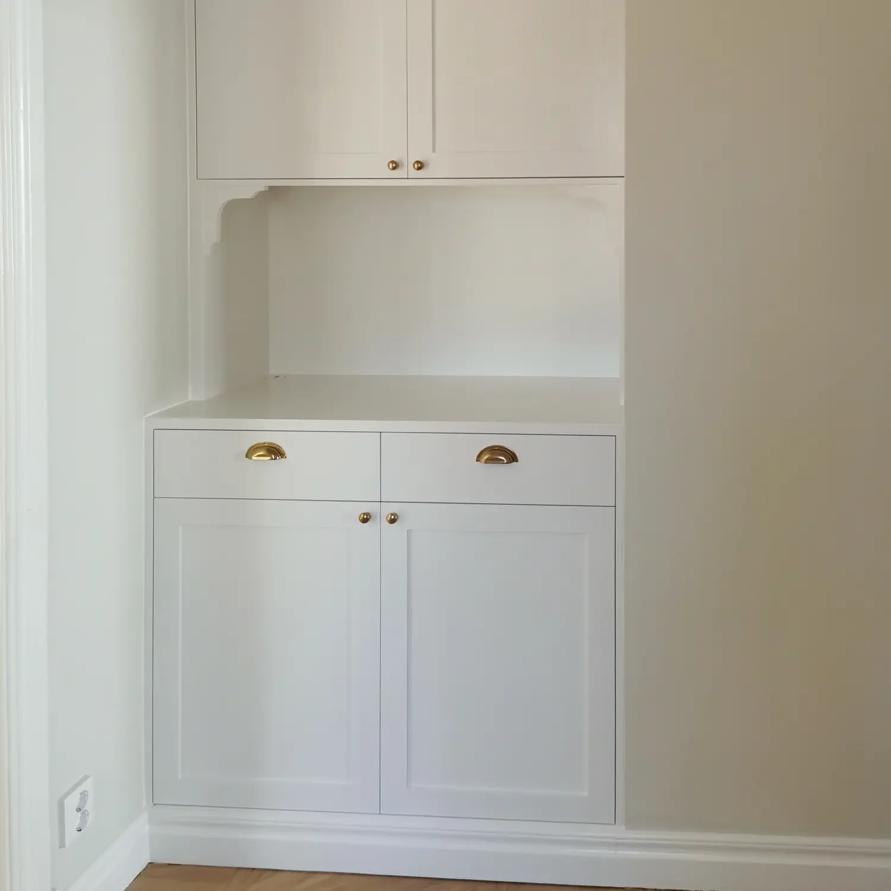
Inpassat i rummet
Platsbyggd förvaring

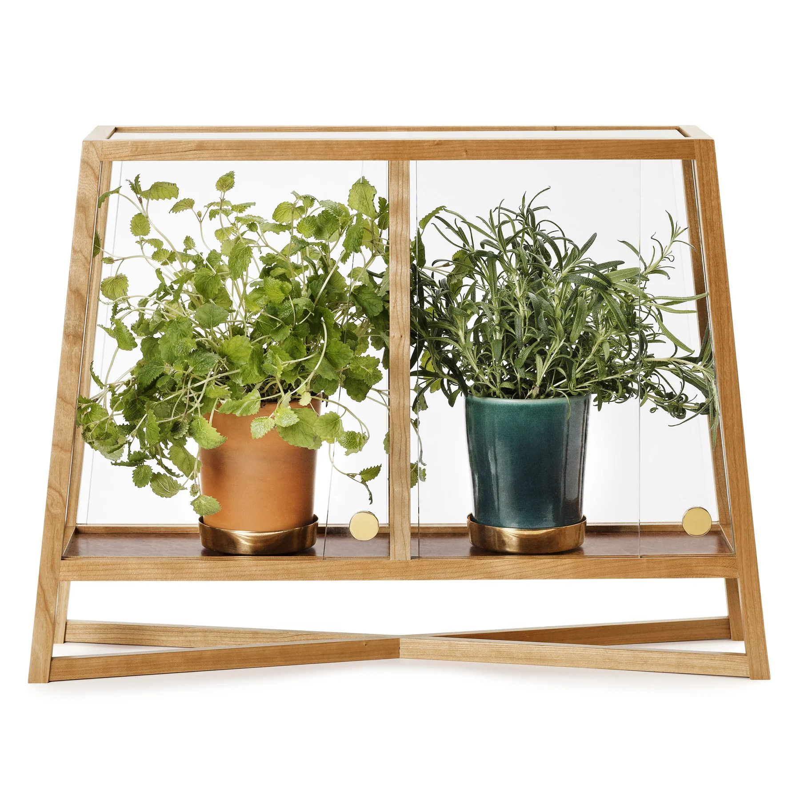
Fönstergrönska
Vitrinskåp för växter

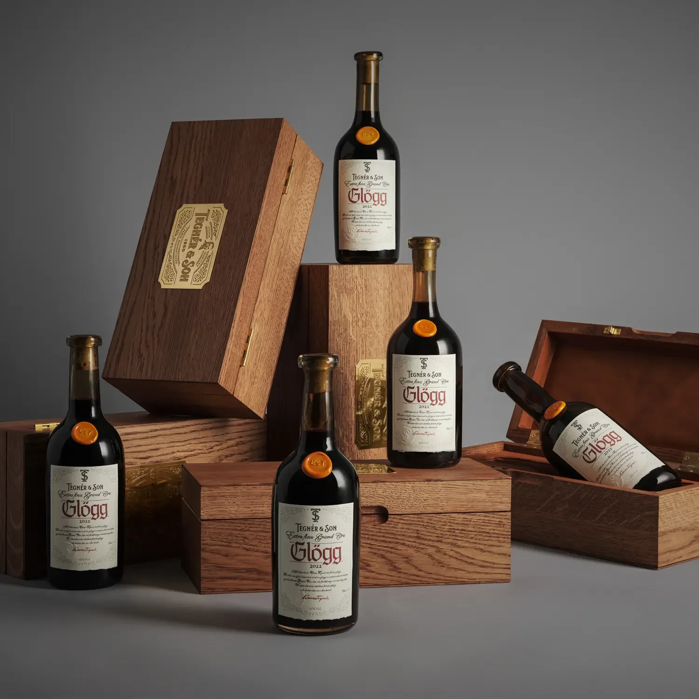
Tegnér & Son
Trälådor till årsglögg 2022

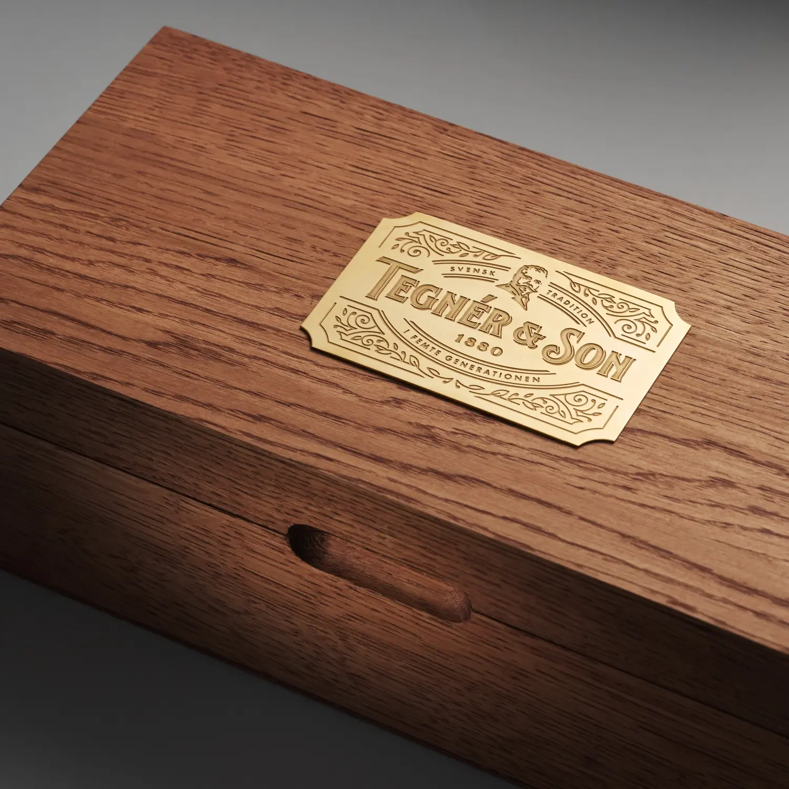
En omsorgsfull förpackning
Handbyggd trälåda

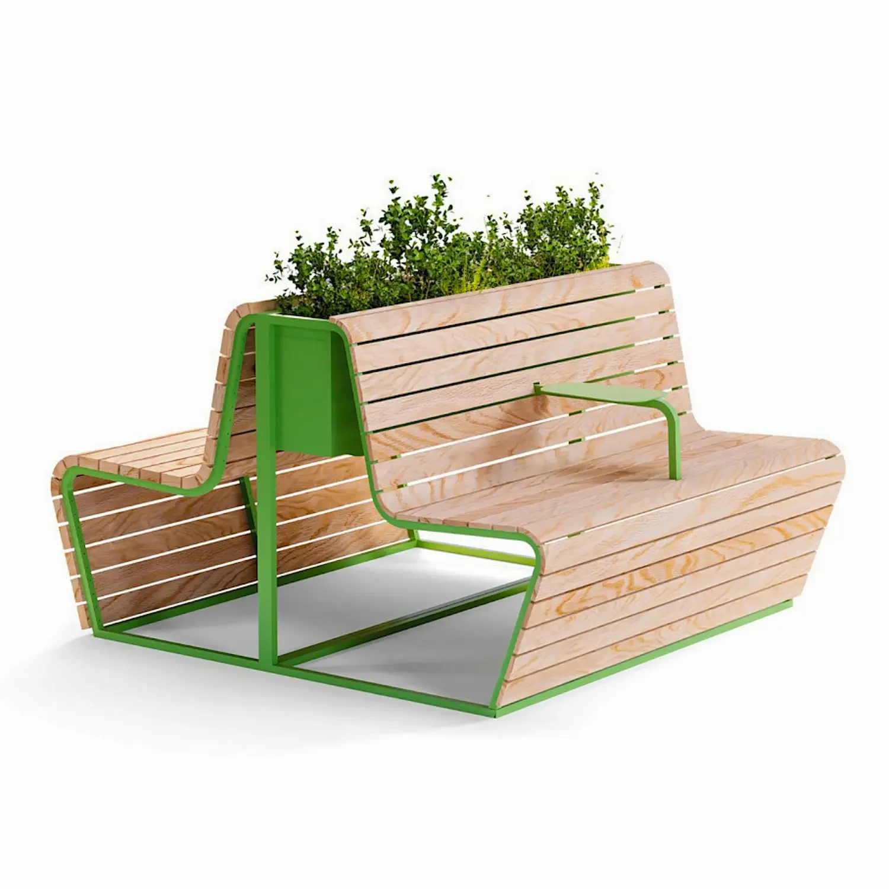
Vilding
Parkbänk med plantering

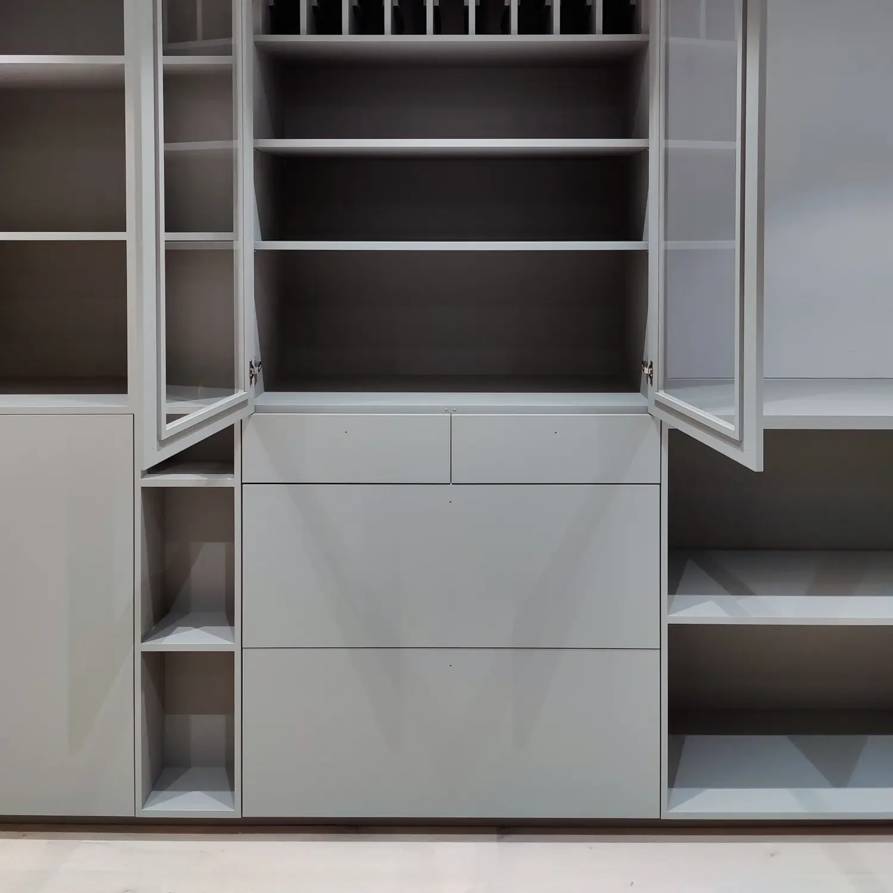
Form och förvaring
Möbelsnickeri

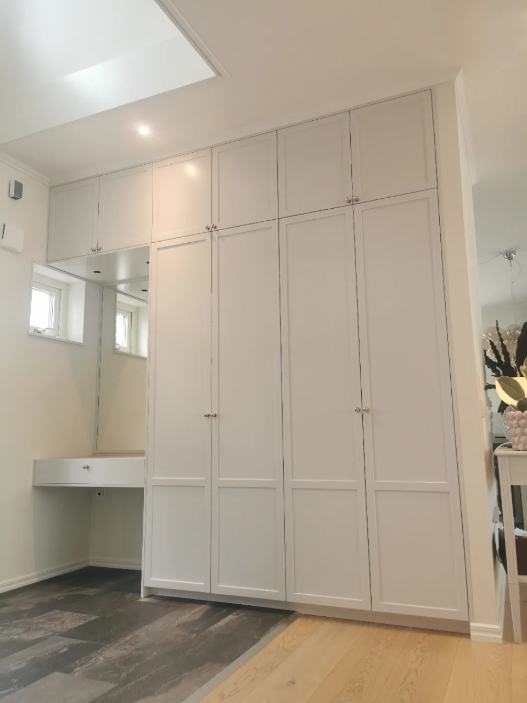
Förvaring på höjden
Platsbyggd garderob
Öppna en bild för att se hela motivet och bläddra vidare.